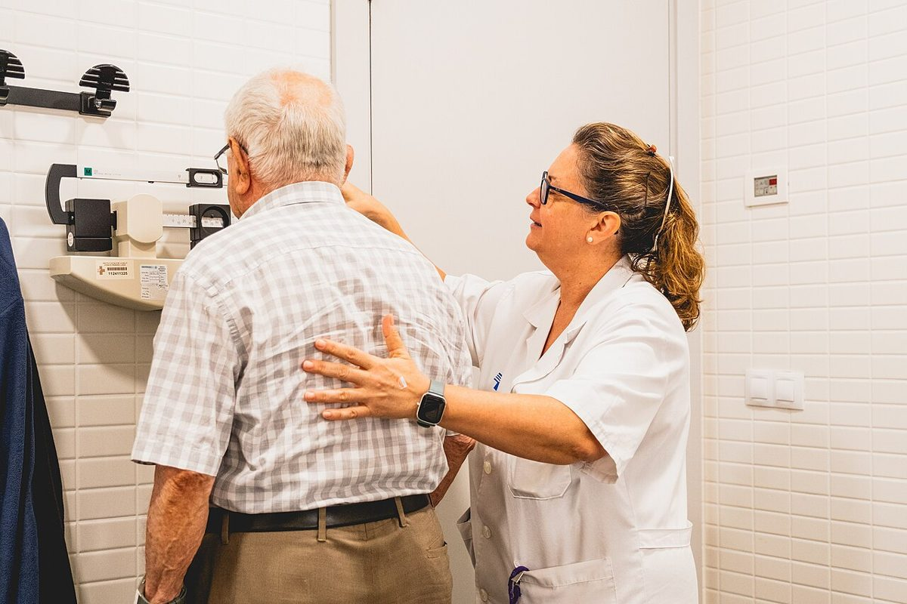

Equipos de protección individual
El equipo de protección individual (EPI) solo protege si se elige bien y, sobre todo, si se quita en el orden correcto. La mayoría de las contaminaciones del profesional ocurren al retirarlo.
Revisado en noviembre de 2026 · Fuentes al final de la página

.jpg){kind=link}
Qué protege cada elemento
- Guantes: contacto con sangre, fluidos, mucosas, piel no intacta o material contaminado. Se cambian entre pacientes y entre zonas sucias y limpias del mismo paciente.
- Bata: contacto del uniforme o la piel con fluidos o con el paciente en aislamiento de contacto. Impermeable si hay riesgo de salpicaduras abundantes.
- Mascarilla quirúrgica: protege de gotas y salpicaduras, y evita que el que la lleva contagie.
- Mascarilla autofiltrante FFP2 o FFP3: protege de aerosoles. Debe ajustarse bien a la cara y comprobarse el sellado cada vez que se pone.
- Gafas o pantalla: salpicaduras a los ojos y la cara.
Orden para ponerlo
- Higiene de manos.
- Bata.
- Mascarilla o respirador, con comprobación del sellado.
- Gafas o pantalla.
- Guantes, cubriendo el puño de la bata.
Orden para quitarlo
- Guantes, sin tocar la piel con la parte exterior: se pellizca uno por fuera, se retira y se sujeta con la otra mano; con el dedo limpio se retira el segundo desde dentro.
- Higiene de manos.
- Gafas o pantalla, por las patillas o la cinta, sin tocar la parte delantera.
- Bata, desatando y enrollándola hacia dentro, de modo que la parte contaminada quede en el interior.
- Mascarilla o respirador, por las gomas, fuera de la habitación si era un aislamiento aéreo.
- Higiene de manos de nuevo.
Muchos centros retiran guantes y bata a la vez, enrollándolos juntos. Sigue el procedimiento de tu centro y, en situaciones de alto riesgo, hazlo con un compañero que supervise.
Los guantes no sustituyen la higiene de manos. Y no se debe tocar la cara, el móvil ni las superficies limpias con los guantes puestos.
Fuentes
- Centers for Disease Control and Prevention. Sequence for Putting On and Removing Personal Protective Equipment. www.cdc.gov
- Siegel JD, Rhinehart E, Jackson M, Chiarello L y Healthcare Infection Control Practices Advisory Committee. 2007 Guideline for Isolation Precautions: Preventing Transmission of Infectious Agents in Healthcare Settings. CDC; actualizada en 2023. www.cdc.gov
- Instituto Nacional de Seguridad y Salud en el Trabajo. Equipos de protección individual: protección respiratoria (mascarillas autofiltrantes FFP2 y FFP3, norma UNE-EN 149). www.insst.es
- Organización Mundial de la Salud. WHO Guidelines on Hand Hygiene in Health Care. Ginebra: OMS; 2009, y material de la campaña «Sus 5 momentos para la higiene de las manos». www.who.int